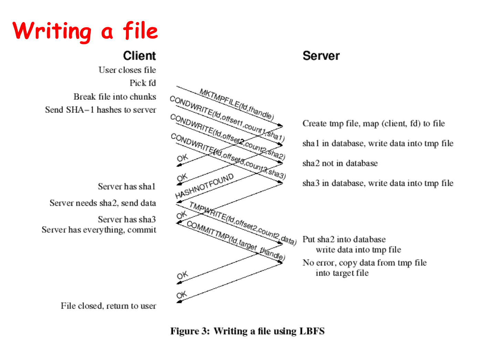
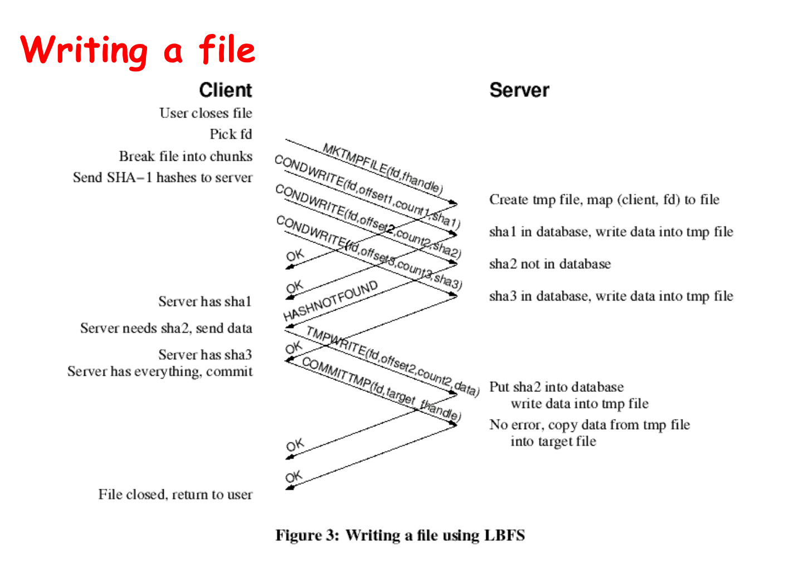

17 - Deduplication
Data Deduplication
Working on slow networks
- Make local coppies: must worry about update conflicts
- Use remote login: only for text-based applications
- Use instead a LBFS: better than remote login; must deal with issues like auto-saves blocking the editor for the duration of transfer.
LBFS
- LBFS file server divides the files it stores into chunks and indexes the chunks by hash value
- LBFS client similarly indexes a large persistent file cache
- LBFS never transfers chunks that recipient already has Tradeoff A: space (index) for time (bandwidth) Tradeoff B: meta info for data
- All transfers are compressed Tradeoff: processing for bandwidth
LBFS Read and Write
 

Other issues
- Protocol
- File Consistency
- Security
- Implementation
Conclusion
- Under normal circumstances, LBFS consumes 90% less bandwidth than traditional file systems.
- Makes transparent remote file access a viable and less frustrating alternative to running interactive programs on remote machines.
Data Deduplication
- Advantages: Less disk, Less bandwidth, Less power
- Disadvantages: More time (compute), More complex, Latent channels
- Eager method: Dedup on write
- Lazy method: Dedup periodically
- Fixed: Index/offset determines the block boundary
- Variable: The data itself determines the block boundary
Tradeoffs?